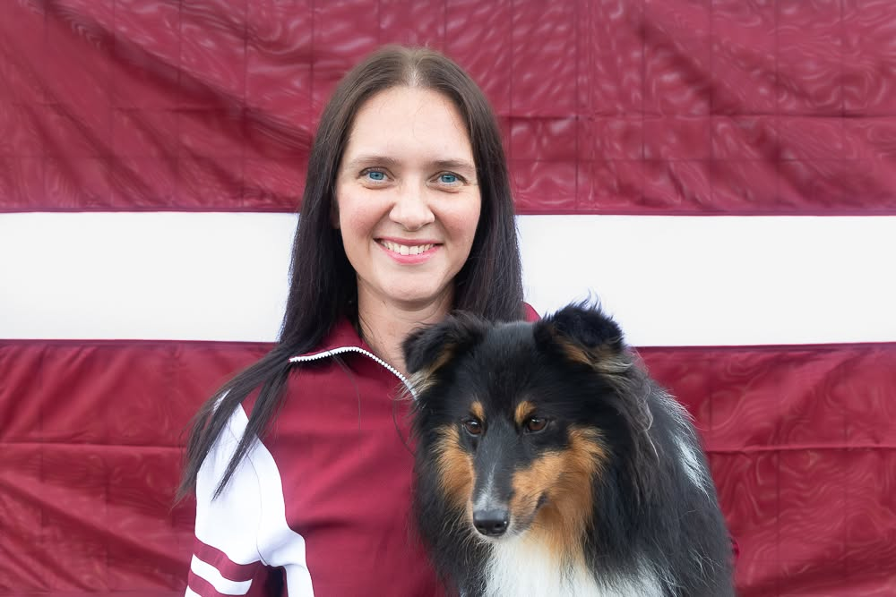
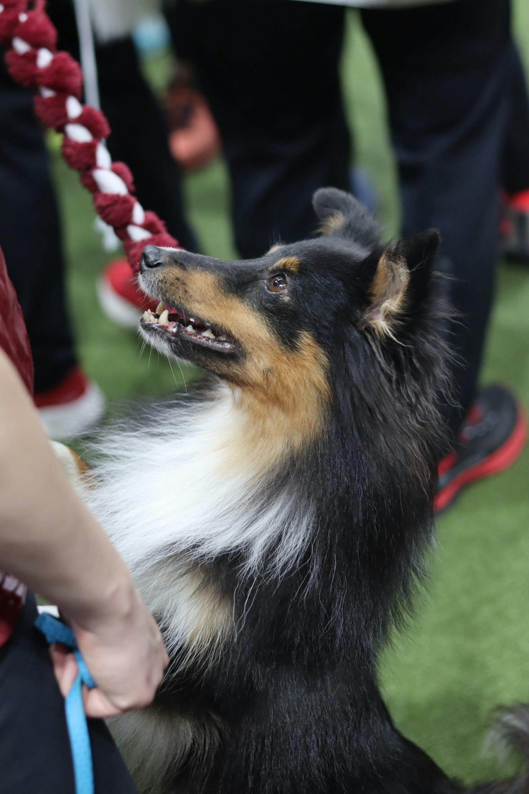
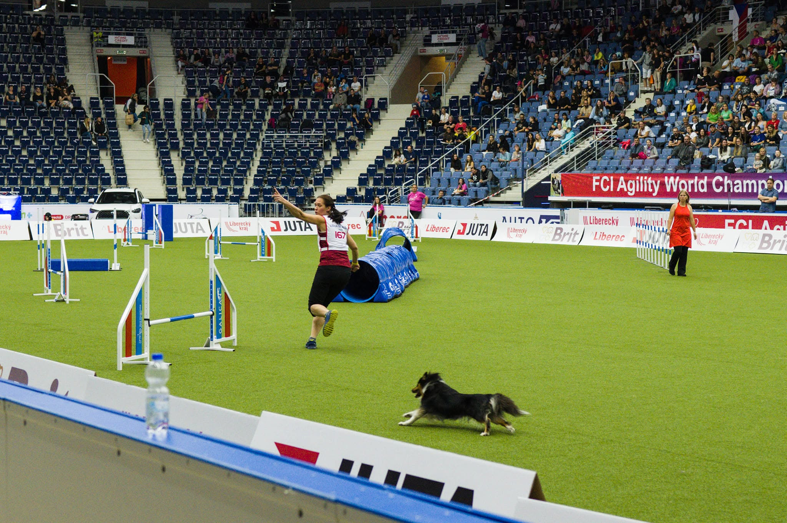
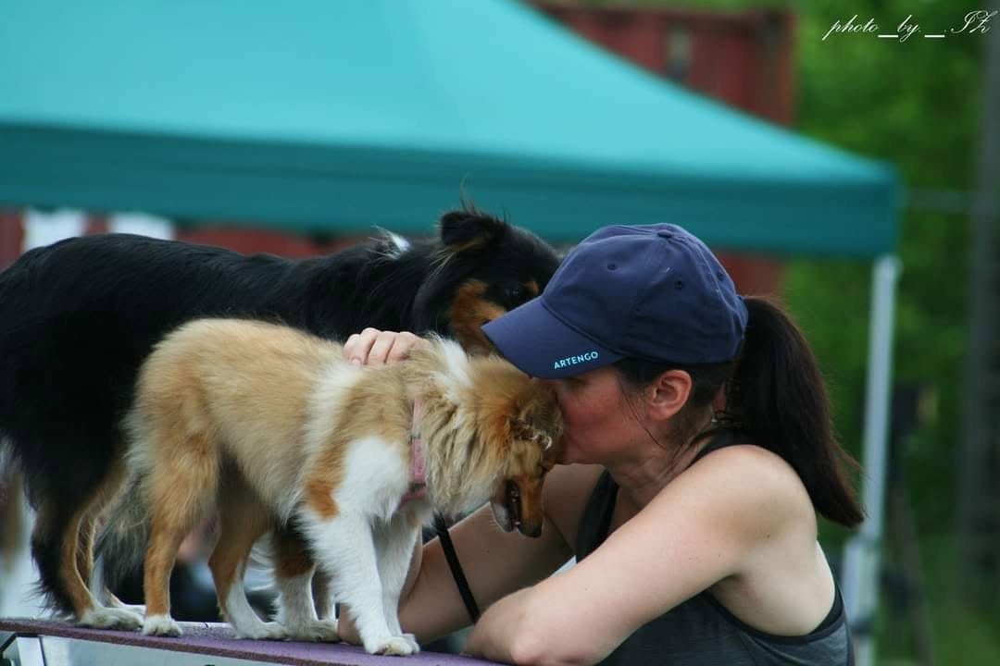
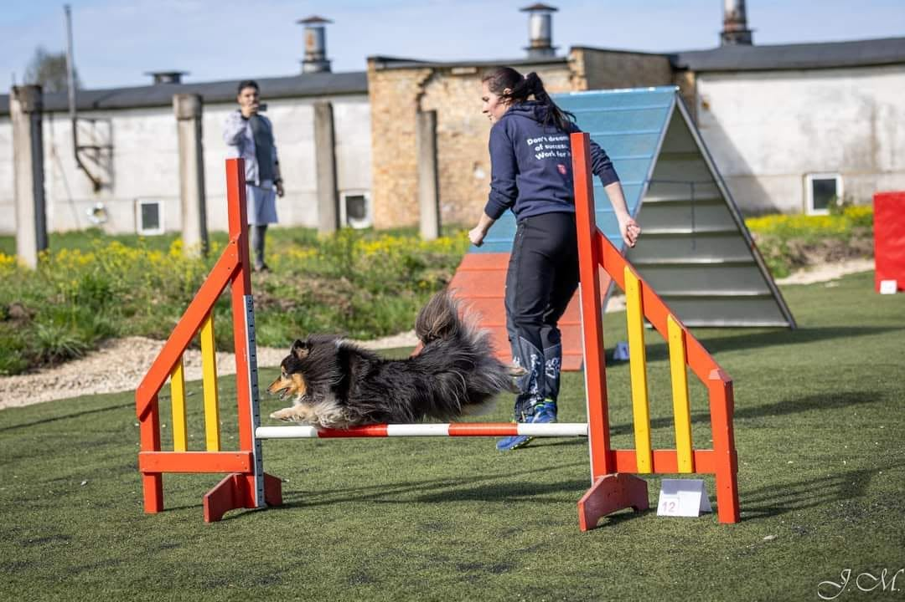
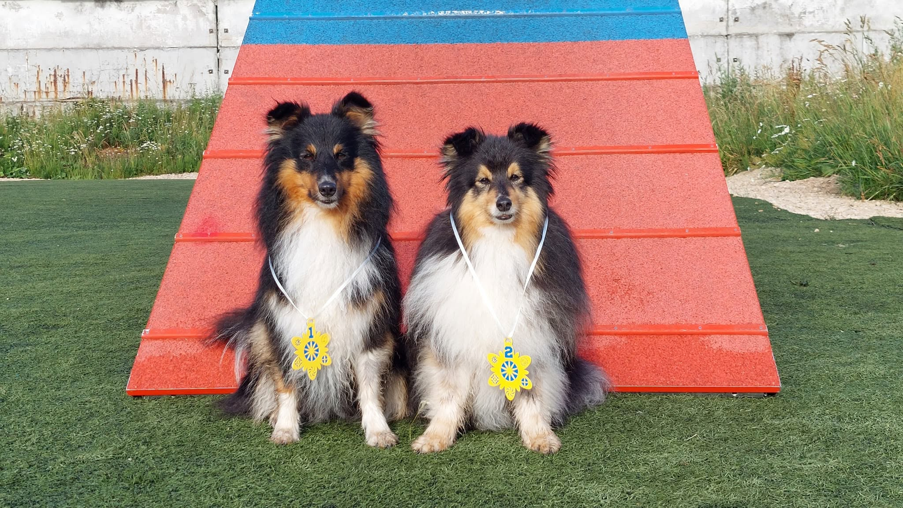
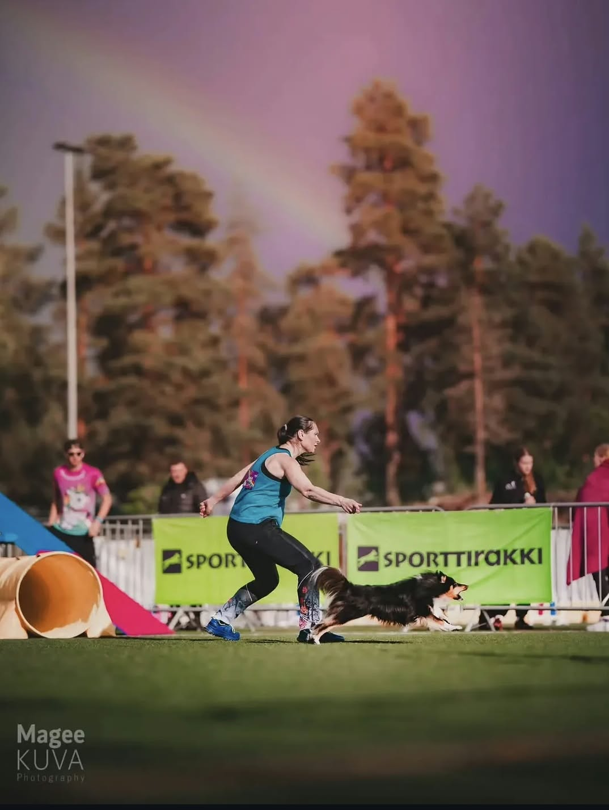
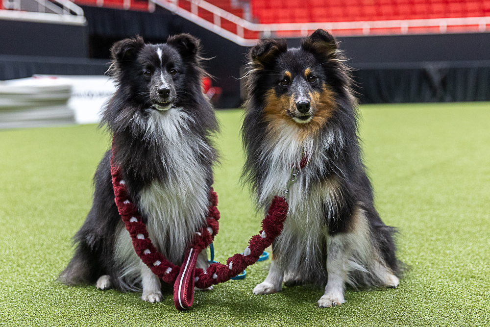

Lidija Beļajeva
Adžiliti ir Lidijas dzīves daļa jau kopš 1996. gada.

Vairāk nekā 30 gadi adžilitī
Lidija ar adžiliti iepazinās vēl pusaudzes gados, 1996. gadā, un kopš tā laika šis sporta veids ir kļuvis par neatņemamu viņas dzīves daļu. Jau 2000. gadā viņa pirmo reizi piedalījās pasaules čempionātā, bet vēlāk izcīnīja arī godalgotu vietu pasaules čempionāta komandu vērtējumā.
Gadu gaitā Lidija ir guvusi pieredzi ne tikai kā sportiste, bet arī kā trenere un starptautiskā adžiliti tiesnese. Viņa trenē suņus un to saimniekus jau vairāk nekā 15 gadus, palīdzot gan iesācējiem spert pirmos soļus adžiliti, gan pieredzējušiem sportistiem pilnveidot savas prasmes.
Latvijas izlasi Lidija ir pārstāvējusi ar sešiem dažādiem suņiem. Arī viņas audzēkņi startē Latvijas izlases sastāvā un gūst labus rezultātus sacensībās Latvijā un ārvalstīs.
Katram pārim savs ceļš
Lidija uzskata, ka adžilitī nav vienas universālas receptes. Katrs suns ir atšķirīgs, un arī cilvēkiem ir dažādas iespējas, pieredze un mērķi. Tāpēc treniņos viņa cenšas atrast individuālu pieeju katram pārim un palīdzēt izveidot tieši viņiem piemērotāko ceļu uz rezultātu.
Neatkarīgi no tā, vai mērķis ir pirmais veiksmīgais starts sacensībās, vieta Latvijas izlasē vai vienkārši labāka sadarbība ar savu suni, svarīgākais ir vēlme mācīties un strādāt kopā.
“Nav neatrisināmu problēmu! Viss ir atkarīgs no neatlaidības, pacietības un ieguldītā laika.”

Vēlies izmēģināt adžiliti?
Nav obligāti jāplāno dalība sacensībās. Treniņos gaidīti arī tie, kuri vēlas interesanti pavadīt laiku kopā ar savu suni un iemācīties ko jaunu.
Mirkļi no adžiliti dzīves





